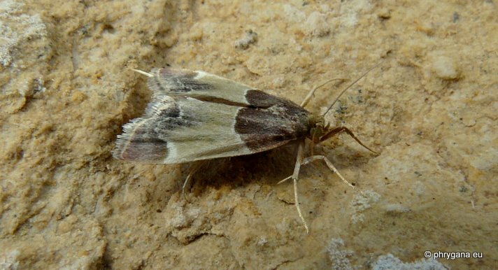
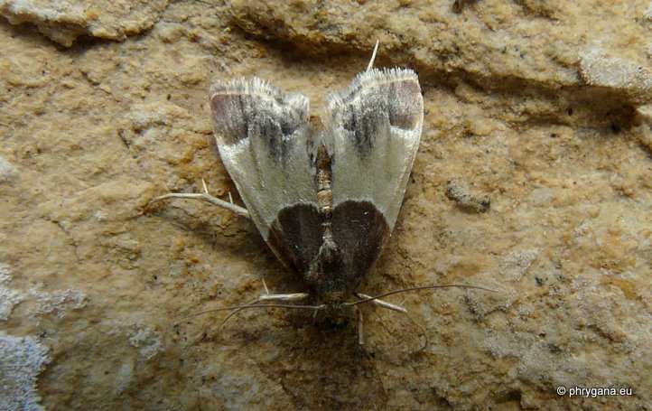

| PHRYGANA | Fauna | Flora | Galles | liste des espèces |
contact -
info - commentaires phrygana1 (at) gmail.com |
| Particularités crétoises | nouveautés | Mines | ressources naturelles |
| Pyralis farinalis (Linnaeus 1758) |
| 284 | Fauna | PYRALIDAE | Pyralinae | Pyralis Linnaeus 1758 |
|
 Pyralis farinalis Melambes (Agios Giorgos) 18 octobre 2011 |
| en: Meal Moth fr: la Pyrale de la farine |
| Envergure entre 22 à 3023 mm. Couleur de fond brun ochré à brun rosé, variant en intensité. Bandes transversales blanches, la première en courbe, la deuxième très sinueuse; base de l'aile antérieure ainsi que aire distale brun pourpré; ailes postérieures gris blanchâtre |
| Espèce avec une position au repos particulère: ailes étalées et abdomen recourbé vers le haut |
| Larve: vit dans une construction en galerie faite de soie et de débris de céréales, attachée solidement à une structure; nymphose dans la structure |
| Espèce phytophage: nomreuses céréales stockées |
| Espèce plurivoltine avec périodes de vol en juin juillet août septembre octobre |
| Statut en Crète: indigène |
| Biotopes en Crète: granges, maisons, boulangeries, fermes |
| Altitudes: 0 - 1000 m. |
| Distribution: région Méditerranéenne, Europe centrale, Afrique du Nord, Moyen-Orient, Turquie, Amériques, Asie; espèce devenue cosmopolite |
| Note: vient à la lumière. |
|
 Pyralis farinalis Melambes (Agios Giorgos) 18 octobre 2011 |
| 26 mai 2012 |
| © paul fontaine -- © Phrygana.eu 2007 -- 2013 |